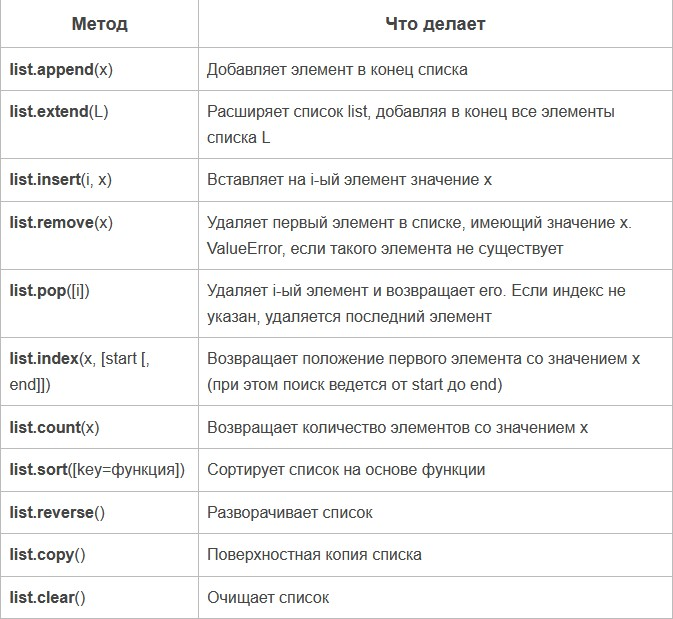
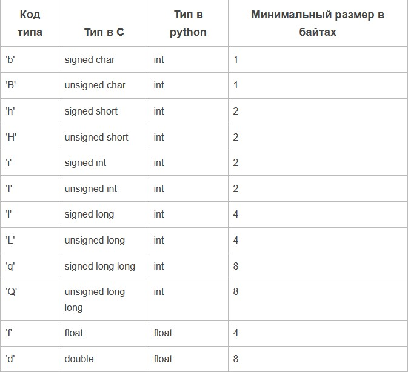

Язык Python
Урок №9. Списки (list). Функции и методы списков. Массивы
Что такое списки?
Списки в Python - упорядоченные изменяемые коллекции объектов произвольных типов (почти как массив,
но типы могут отличаться).
Чтобы использовать списки, их нужно создать. Создать список можно несколькими способами. Например,
можно обработать любой итерируемый объект встроенной функцией list:
>>> list('список')
['с', 'п', 'и', 'с', 'о', 'к']
Список можно создать и при помощи литерала:
>>> s = []
# Пустой список
>>> l = ['s', 'p', ['isok'], 2]
>>> s
[]
>>> l
['s', 'p', ['isok'], 2]
Как видно из примера, список может содержать любое количество любых объектов (в том числе и
вложенные списки), или не содержать ничего.
И еще один способ создать список - это
генераторы списков
. Генератор списков - способ построить
новый список, применяя выражение к каждому элементу последовательности. Генераторы списков очень
похожи на цикл for.
>>> c = [c * 3 for c in 'list']
>>> c
['lll', 'iii', 'sss', 'ttt']
Возможна и более сложная конструкция генератора списков:
>>> c = [c * 3 for c in 'list' if c != 'i']
>>> c
['lll', 'sss', 'ttt']
>>> c = [c + d for c in 'list' if c != 'i' for d in 'spam' if d != 'a']
>>> c
['ls', 'lp', 'lm', 'ss', 'sp', 'sm', 'ts', 'tp', 'tm']
Но в сложных случаях лучше пользоваться обычным циклом for для генерации списков.
Функции и методы списков
Создать создали, теперь нужно со списком что-то делать. Для списков доступны основные встроенные функции, а также методы списков.
Таблица "методы списков"

Нужно отметить, что методы списков, в отличие от строковых методов, изменяют сам список, а потому
результат выполнения не нужно записывать в эту переменную.
>>> l = [1, 2, 3, 5, 7]
>>> l.sort()
>>> l
[1, 2, 3, 5, 7]
>>> l = l.sort()
>>> print(l)
None
И, напоследок, примеры работы со списками:
>>> a = [66.25, 333, 333, 1, 1234.5]
>>> print(a.count(333), a.count(66.25), a.count('x'))
2 1 0
>>> a.insert(2, -1)
>>> a.append(333)
>>> a
[66.25, 333, -1, 333, 1, 1234.5, 333]
>>> a.index(333)
1
>>> a.remove(333)
>>> a
[66.25, -1, 333, 1, 1234.5, 333]
>>> a.reverse()
>>> a
[333, 1234.5, 1, 333, -1, 66.25]
>>> a.sort()
>>> a
[-1, 1, 66.25, 333, 333, 1234.5]
Изредка, для увеличения производительности, списки заменяют гораздо менее гибкими массивами (хотя в
таких случаях обычно используют сторонние библиотеки, например NumPy).
Модуль array. Массивы в python
Модуль array определяет массивы в python. Массивы очень похожи на списки, но с ограничением на тип
данных и размер каждого элемента.
Размер и тип элемента в массиве определяется при его создании и может принимать следующие значения:

Класс array.array(TypeCode [, инициализатор]) - новый массив, элементы которого ограничены TypeCode,
и инициализатор, который должен быть списком, объектом, который поддерживает интерфейс буфера, или
итерируемый объект.
array.typecodes - строка, содержащая все возможные типы в массиве.
Массивы изменяемы. Массивы поддерживают все списковые методы (индексация, срезы, умножения,
итерации), и другие методы.
Методы массивов (array) в python
array.typecode - TypeCode символ, использованный при создании массива.
array.itemsize - размер в байтах одного элемента в массиве.
array.append(х) - добавление элемента в конец массива.
array.buffer_info() - кортеж (ячейка памяти, длина). Полезно для низкоуровневых операций.
array.byteswap() - изменить порядок следования байтов в каждом элементе массива. Полезно при чтении
данных из файла, написанного на машине с другим порядком байтов.
array.count(х) - возвращает количество вхождений х в массив.
array.extend(iter) - добавление элементов из объекта в массив.
array.frombytes(b) - делает массив array из массива байт. Количество байт должно быть кратно размеру
одного элемента в массиве.
array.fromfile(F, N) - читает N элементов из файла и добавляет их в конец массива. Файл должен быть
открыт на бинарное чтение. Если доступно меньше N элементов, генерируется исключение EOFError , но
элементы, которые были доступны, добавляются в массив.
array.fromlist(список) - добавление элементов из списка.
array.index(х) - номер первого вхождения x в массив.
array.insert(n, х) - включить новый пункт со значением х в массиве перед номером n. Отрицательные
значения рассматриваются относительно конца массива.
array.pop(i) - удаляет i-ый элемент из массива и возвращает его. По умолчанию удаляется последний
элемент.
array.remove(х) - удалить первое вхождение х из массива.
array.reverse() - обратный порядок элементов в массиве.
array.tobytes() - преобразование к байтам.
array.tofile(f) - запись массива в открытый файл.
array.tolist() - преобразование массива в список.
Вот и всё, что можно было рассказать про массивы. Они используются редко, когда нужно достичь
высокой скорости работы. В остальных случаях массивы можно заменить другими типами данных: списками,
кортежами, строками.